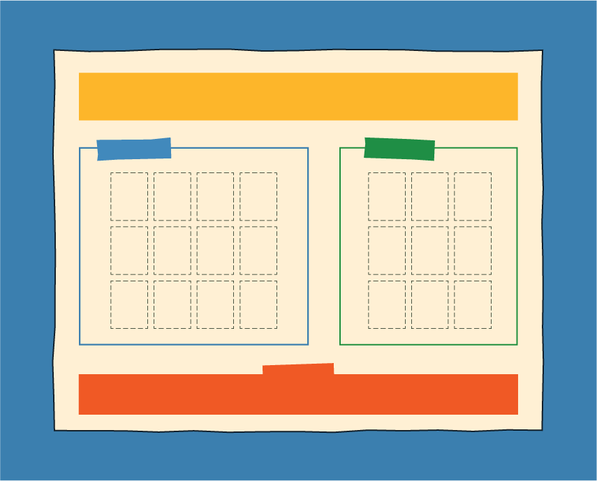
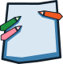
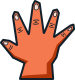

Actividad 1: Tablero

Propósito
Generar un primer acercamiento al tema, recuperar conocimientos y experiencias de los estudiantes y orientar la creación de ideas a partir de una situación o pregunta.
Preparación
Tiempo
90 minutos

Materiales
- Tablero
- Fichas
- Papelógrafo
- Lápices y colores
- Recurso web

Antes de comenzar
Seleccionar el tema.
Plantear una pregunta o situación para direccionar la
temática.
Desarrollo
Problematizemos
Presenta el tema y plantea una pregunta o situación que invite a los estudiantes a pensar, cuestionar y expresar diferentes posibilidades.
Preguntas de mediación
- ¿Qué creen que está pasando?
- ¿Por qué creen que puede ocurrir?
- ¿Qué podría pasar?
- ¿Cómo nos afectaría?
- ¿Qué otras posibilidades imaginamos?
Preguntémonos
Pulsa “Editar” para adaptar la pregunta al tema.
Exploremos
Entrega el tablero y fichas a cada grupo (al menos 2 fichas a cada estudiante). Invita a los estudiantes a relacionar el tema con lo que conocen, han vivido u observado. Indica que pueden escribir o dibujar sus ideas en las fichas y acomodarlas en la sección "Exploremos" del tablero.
Preguntas de mediación
- ¿Qué sabemos sobre este tema?
- ¿Dónde lo hemos visto?
- ¿Qué experiencias tenemos?
- ¿Qué nos llama la atención?
Elijamos
Pide a los estudiantes revisar las ideas y llegar a un acuerdo sobre cuáles quieren desarrollar. Indica que deben mover las fichas de la sección "Exploremos" a la sección "Elijamos".
Preguntas de mediación
- ¿Cuál de estas ideas nos interesa más?
- ¿Podemos combinar algunas ideas?
- ¿Todos estamos de acuerdo?
Dibujemos
Invita a los estudiantes a que realicen un dibujo colectivo con las ideas que elijieron. Proporciona un papelógrafo y material de dibujo a cada grupo.
Observemos
Asegúrate que todos los estudiantes participen en la generación de ideas, toma de decisiones y realización del dibujo.